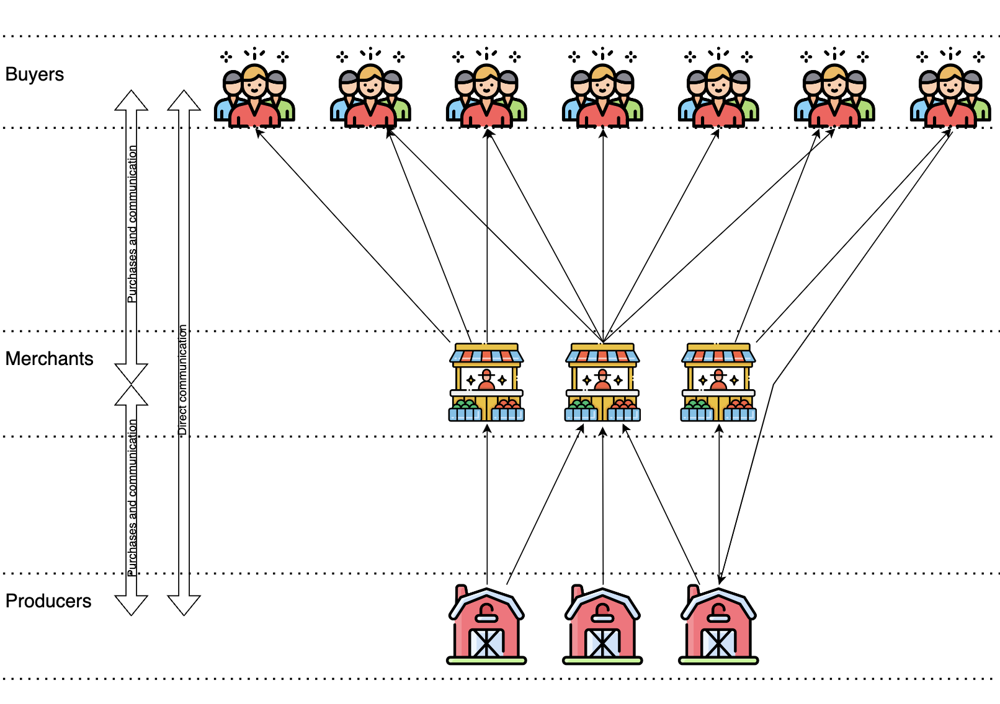

Fairr is a cutting-edge omnichannel commerce platform that supports local independent retailers by enhancing their online presence and streamlining their operational processes. It provides a unique marketplace for consumers to access a diverse range of local products, promoting sustainable and community-focused shopping.

Benefits to Producers and Merchants
For producers and merchants, Fairr offers powerful tools to manage inventory, track orders, and analyze customer behavior. These features enable them to optimize their operations, reach a wider customer base, and ultimately increase sales. The platform also allows them to tell their stories and the origin of their products, which helps build a trustworthy relationship with consumers.

Advantages for Buyers
Buyers benefit from Fairr through access to a curated selection of high-quality, locally-sourced goods that they might not find elsewhere. The platform provides a convenient and reliable shopping experience, complete with user reviews, detailed product information, and easy-to-use search and filter tools.

Impact on Local Economy and Retail Industry

Fairr is set to transform the local economy by keeping spending within the community, thereby supporting local jobs and businesses. It promotes a model of sustainable consumption by reducing the carbon footprint associated with long-distance transportation of goods. For the retail industry, Fairr introduces a new paradigm where local markets gain the tools to compete on equal footing with large e-commerce platforms, democratizing the retail landscape.

How does it work?

Benefits for Producers
Direct Market Access
- Producers, such as farmers, artisans, and manufacturers, can gain direct access to a broader consumer base through Fairr. By bypassing traditional middlemen, producers can potentially increase their profit margins and retain more control over their pricing and branding. Local retail being a reseller acts as last mile delivery.
Enhanced Visibility
- Listing their products on a platform like Fairr increases a producer’s visibility not only to local consumers but also to merchants who may be interested in sourcing quality products for resale.
Data-Driven Insights
- Fairr can provide producers with valuable analytics on consumer preferences, market trends, and sales performance. These insights can help producers better understand their audience, optimize their product offerings, and make informed business decisions.
Community and Network Building
- Producers can benefit from being part of a larger network of like-minded businesses and consumers. This community can offer support, collaboration opportunities, and a chance to be part of a marketplace that values sustainability and local production.
Benefits for Merchants
Access to Unique, Local Products
- Merchants can source distinct products directly from producers, enhancing their product lineup and offering items that are not widely available in larger retail chains. This can help differentiate their offerings and attract customers looking for unique or locally-made products.
Reduced Supply Chain Costs
- By purchasing directly from producers, merchants can reduce costs associated with intermediaries. Lower acquisition costs can improve profit margins or allow merchants to offer more competitive pricing.
Assurance of Product Quality and Origin
- Merchants benefit from a clearer understanding of where and how the products are made, which can be a significant selling point for consumers increasingly interested in ethical and sustainable purchasing.
Benefits for Buyers
Fresher and More Authentic Products
- Buyers have access to products that are fresher, especially in the case of food items, which can go directly from farm to consumer without lengthy storage periods. Additionally, products maintain their authenticity and quality when not mass-produced.
Greater Transparency
- Knowing exactly where a product comes from and how it’s made increases consumer trust and satisfaction. Fairr can provide detailed information about the producers, their production methods, and their business values.
Supporting Local Economies
- Consumers who purchase from local producers contribute directly to their local economy, fostering job creation and supporting small businesses in their communities.